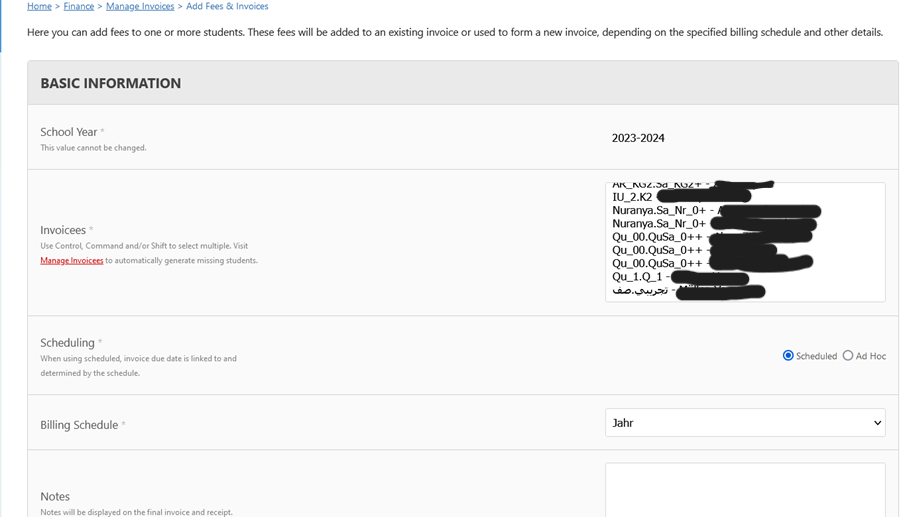

1- قم بالضغط هنا People Admissions
2- ثم قم باختيار Manage Applications
3- قم بالضغط على رمز القلم لمراجعة طلب التقديم
4- بعد المراجعة و التأكد من صحة البيانات اضغط Accept و بعدها قم مباشرة بتسجيل الطفل عبر Student enrolment
5- قم بالضغط على Add و ادخال الطفل
1- لالغاء تسجيل طفل، قم بالبحث على اسم الطفل من خلال Home -> Timetable Admin -> Course enrolment by person
2- و قم بالضغط على رمز القلم و انزل الى اسفل الشاشة
3- يمكنك الغاء تسجيله عبر الضغط على رمز سلة المهملات و اضافته من الاعلى الى كورس جديد
4- لتعديل بيانات الطفل Home -> Admin -> User Admin -> Manage Users
5- قم بالبحث عن اسم الطالب و اضغط رمز القلم للتعديل
الان يمكنك تعديل البيانات و لا تنس الضغط فى اخر الأمر على senden
1- Home -> Admin -> Timetable Admin -> Manage timetable
2- اضغط على رمز القلم و انزل الى اسفل الشاشة و اختر اليوم المراد ربط الفصول فيه بالغرف
3- اضغط على رمز القلم مرة اخرى و انزل الى اسفل الشاشة و اختر الساعة الاولى او الثانية من الدوام
4- اضغط Add و قم باضافة الفصل و القاعة
5- و لا تنس الضغط على Submit و هنا بعد تسجيل كل الصفوف
1- من على شمال الشاشة الايقونة الرابعة اختر المكتبة
2- يمكنك اضافة كتاب جديد من Hinzufügen و لاستعارة كتاب اختر الكتاب المراد استعارته بالبحث عنه
3- قم بالضغط هنا لتسجيل بيانات الطفل
4- قم بالضغط على Ausliehen
5- قم بادخال اسم الطفل الذي يريد استعارة الكتاب أو الشخص المسؤول عن رد الكتاب في الموعد المحدد.
1- من الايقونة الثانية قم باختيار Timetable Admin
2- قم باختيار Manage courses and classes
3- و بعدها اضغط على Add
4- قم بملأ بيانات الكورس 7 و ليكن لغة عربية مستوى
لحفظ البيانات اضغط Submit
5- لاضافة فصول للمستوى اي فصل 1 مستوي 7 مثلا ارجع للوراء Manage courses and classes و اضغط
6- و ستلاحظ عدد الصفوف الموجود لكل مستوى
6- لاضافة صف للمستوى اضغط على Add
7- قم بادخال بيانات الصف
و اضغط Submit
8- لاضافة طالب او مدرس يمنكم من الضغط على هذه الايقونة
9- اختر المدرس او الطالب من القائمة
10- عند الرجوع مرة اخرى ل Manage courses and classes
11- يمكنكم حذف كورس من سلة المهملات
12- لتسجيل الطفل في صف اختر Admin -> Timetable Admin -> Course enrolment by person
قم بكتابة اسم الطفل فى البحث
13- و اضغط على رمز القلم
14- اختر الفصل المرجو للطفل الانتساب اليه
ملحوظة هامة نفس الطريقة لاضافة مدرس الى الصف مع تغيير ال Role الى Teacher
1- اختر من القائمة People -> staff
2- اختر Manage staff Absence ثم اضغط على New Absence
3- قم باختيار المدرسة و سبب الغياب و الفترة
4- و اختر المدرسة البديلة
1-تأكد أولا أن صلاحيتك هي (مدير) Administrator
2- اختر من القائمة Other Finance
3- اختر Manage invoices ستجد بالأسفل علامة اضافة Add

4- اختر اسم الطالب و أن الفاتورة ستكون سنوية و من الاسفل اختر عربي أو قرآن أو كلاهما و اضغط submit
5- ارجع الى Manage Invoices سيظهر اسم الطالب في القائمة و قم بالضغط على السهم Issue 6- ستظهر لك معلومات الطفل لانشاء الفاتورة اضغط Submit 7- مع الرجوع ل Manage invoices ستجد اسم الطفل ,اضغط على القلم Edit 8- قم بتعبئة الفورم كما دفع العميل هل قام بدفع سنة كاملة أم يدفع شهريا . 9- للدفع الشهري نختار Paid partial و نكتب كم دفع حتى الآن و كيفية الدفع و تاريخه و اضغط submit 10- ستجد اسم الطفل و كم دفع و يمكنك كل شهر تعديل القيمة.